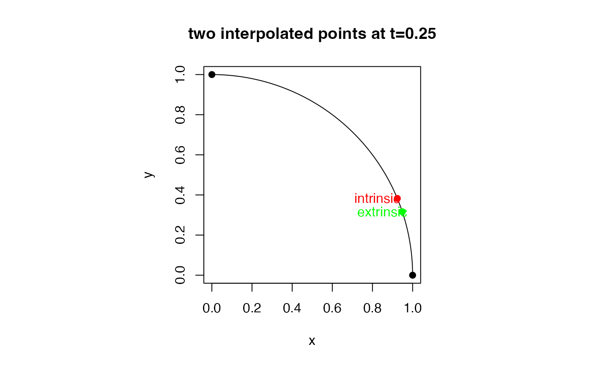

Given 2 observations \(X_1, X_2 \in \mathcal{M}\), find the interpolated point of a geodesic \(\gamma(t)\) for \(t \in (0,1)\) which assumes two endpoints \(\gamma(0)=X_1\) and \(\gamma(1)=X_2\).
Usage
riem.interp(riemobj, t = 0.5, geometry = c("intrinsic", "extrinsic"))Examples
#-------------------------------------------------------------------
# Geodesic Interpolation between (1,0) and (0,1) in S^1
#-------------------------------------------------------------------
## PREPARE DATA
sp.start = c(1,0)
sp.end = c(0,1)
sp.data = wrap.sphere(rbind(sp.start, sp.end))
## FIND THE INTERPOLATED POINT AT "t=0.25"
mid.int = as.vector(riem.interp(sp.data, t=0.25, geometry="intrinsic"))
mid.ext = as.vector(riem.interp(sp.data, t=0.25, geometry="extrinsic"))
## VISUALIZE
# Prepare Lines and Points
thetas = seq(from=0, to=pi/2, length.out=100)
quarter = cbind(cos(thetas), sin(thetas))
pic.pts = rbind(sp.start, mid.int, mid.ext, sp.end)
pic.col = c("black","red","green","black")
# Draw
opar <- par(no.readonly=TRUE)
par(pty="s")
plot(quarter, main="two interpolated points at t=0.25",
xlab="x", ylab="y", type="l")
points(pic.pts, col=pic.col, pch=19)
text(mid.int[1]-0.1, mid.int[2], "intrinsic", col="red")
text(mid.ext[1]-0.1, mid.ext[2], "extrinsic", col="green")

par(opar)